表格 | 本体系的标准语罗马字表记
表格 | 本体系的方言罗马字表记
表格 | 行政区划
| 说明 | 图（点击放大） |
|---|---|
| 国造 東伍吉田 et al (1935) 上古日本の国造配置図（原文：國郡制定（一）國造配置） |
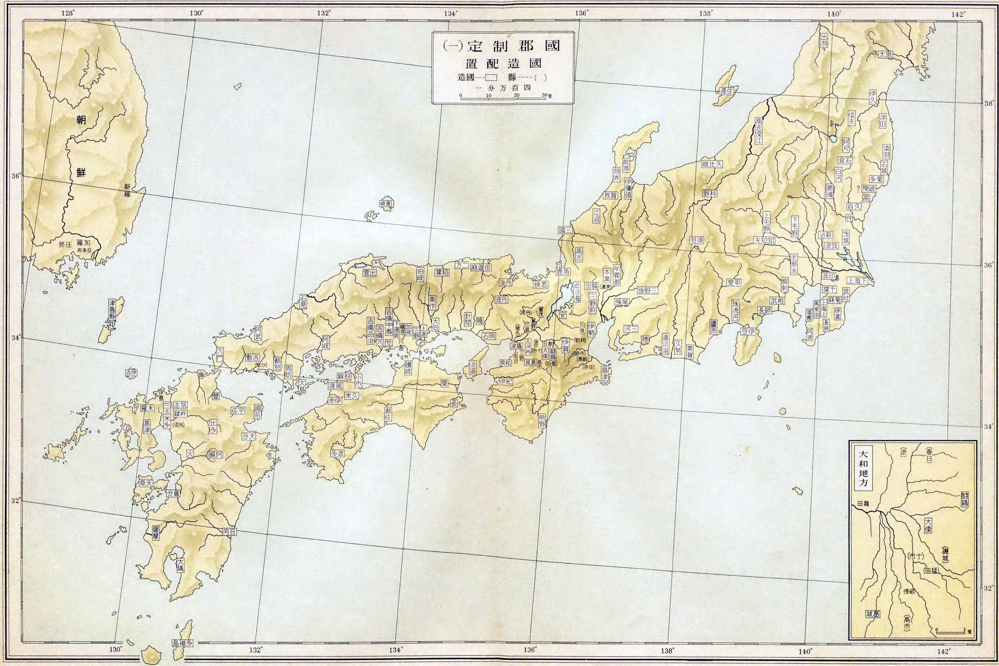 |
| 国县对照 世界の歴史まっぷ (2019) 国県対照表日本地図 |
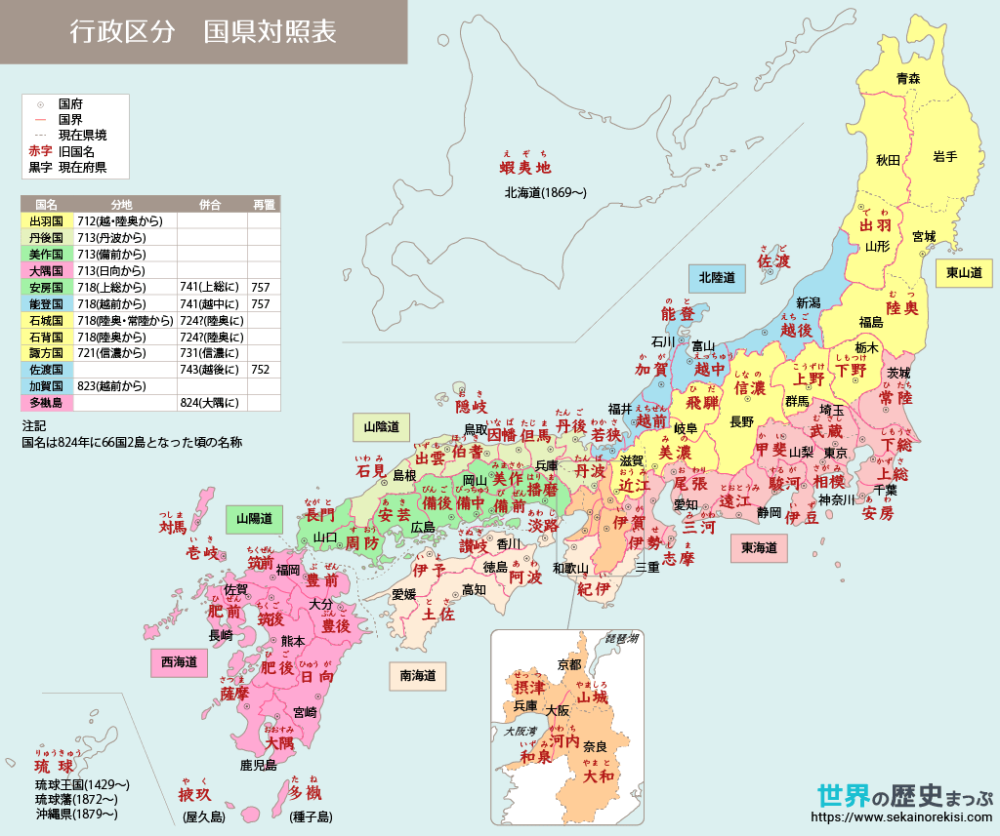 |
| 日本地形 Bourrichon and Peka (2017) 日本全域の主要地形名（山地、平野、海域など）を示した地形図 [有修改] |
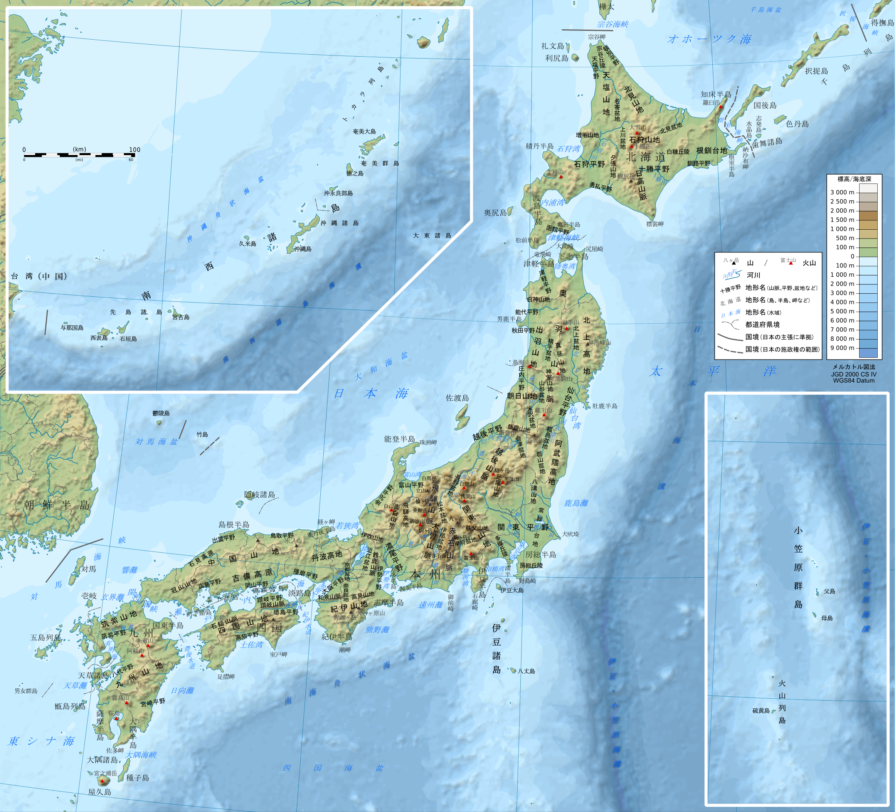 |
| 萨南群岛 DEMIS World Map Server, Artanisen (2019) 薩南諸島の地図。 鹿児島、日本。 |
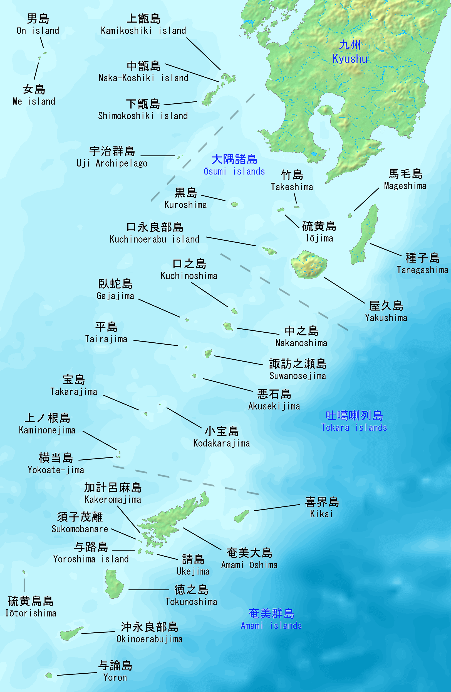 |
| 琉球群岛 Kenan Celik (2020) 南琉球宮古語史 |
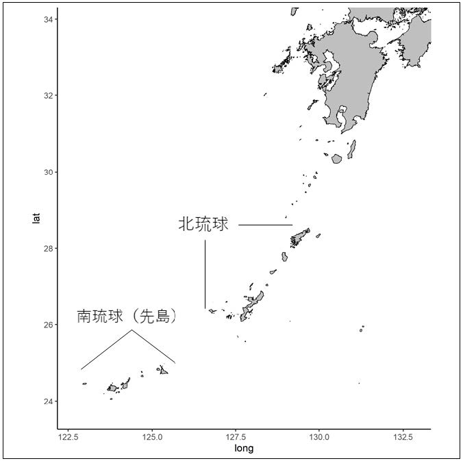 |
| 北琉球群岛：奄美群岛与冲绳群岛 Kenan Celik (2020) 南琉球宮古語史 |
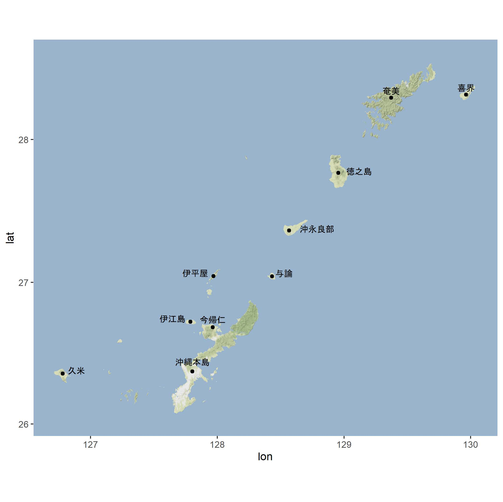 |
| 奄美群岛 Bamse (2007) Topographic map of the Amami Islands (Japanese version) |
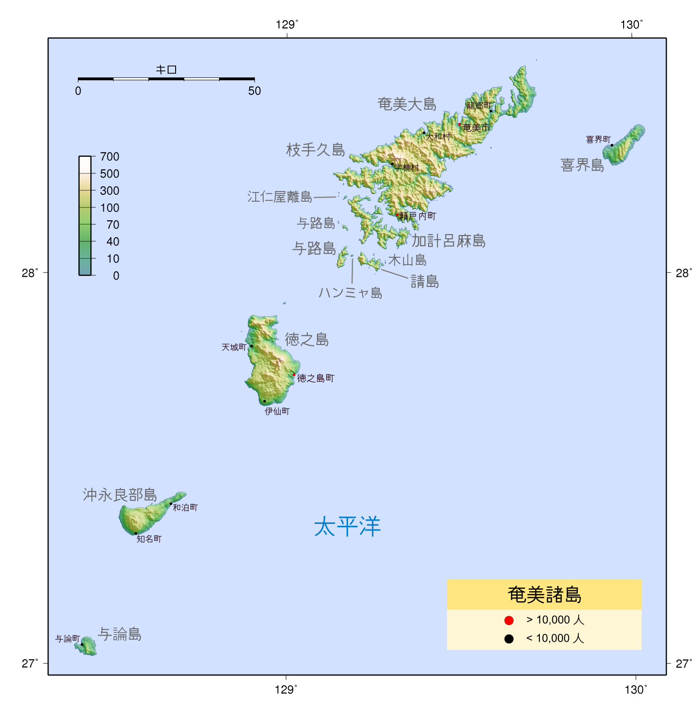 |
| 冲绳群岛 Own work (2017) 沖縄諸島の地図、ただし硫黄鳥島は欄外。点線は当諸島における市町村の境界を示す。 |
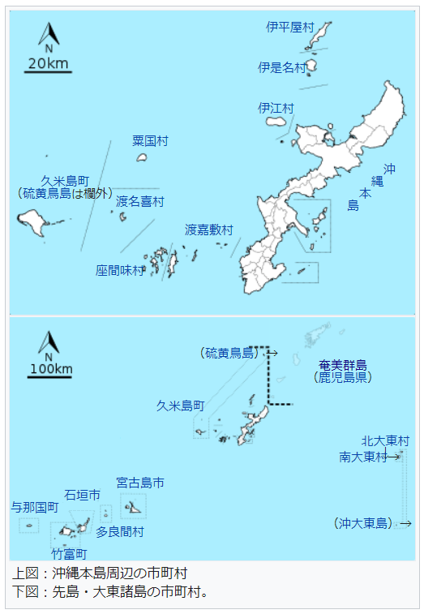 |
| 冲绳本岛 Own work (2017) 沖縄本島の地図。点線は市町村の境界線。 |
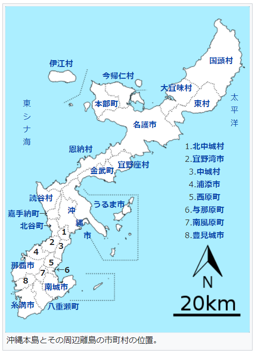 |
| 南琉球群岛：宫古群岛与八重山群岛 Kenan Celik (2020) 南琉球宮古語史 |
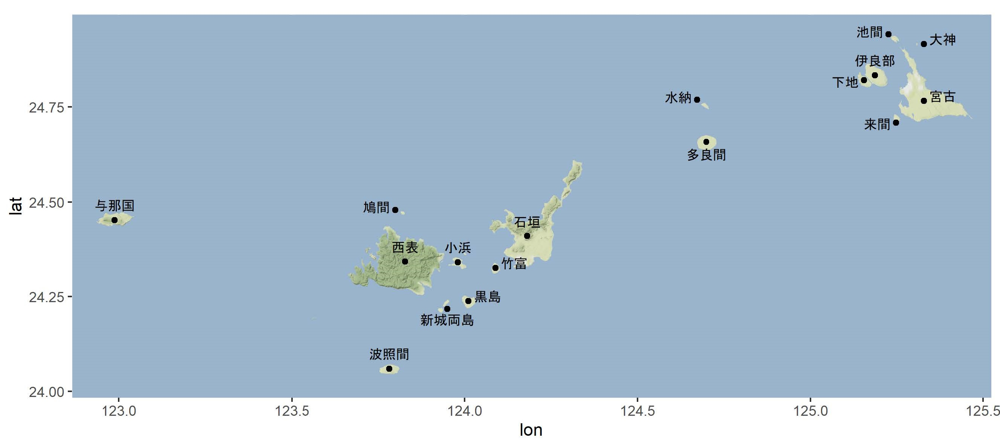 |
| 宫古群岛 Kenan Celik (2020) 南琉球宮古語史 |
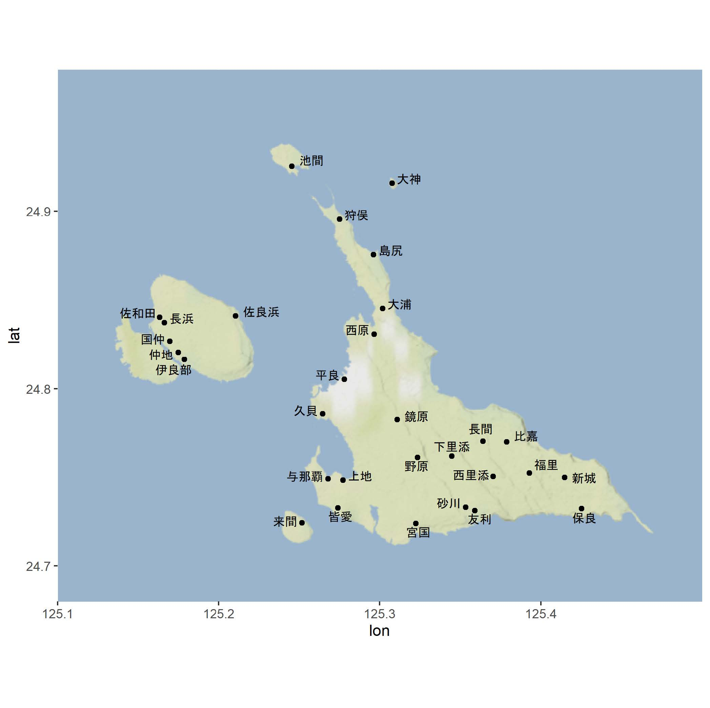 |
| 八重山群岛 Kenan Celik (2020) 南琉球宮古語史 |
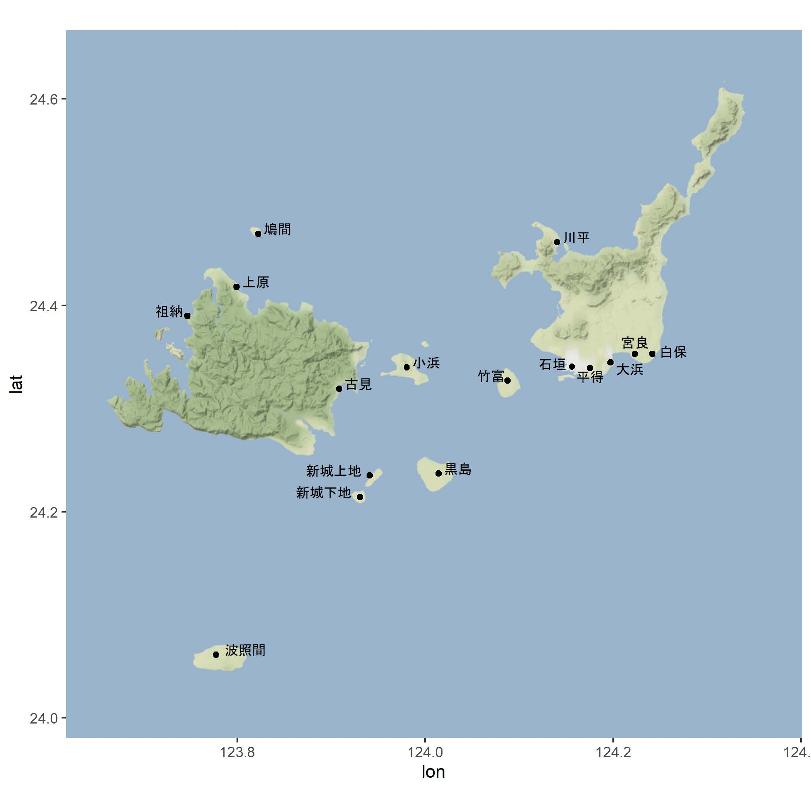 |
JPRoots（日琉语之道）旨在构建综合性的日琉语学术平台。本平台在大量日琉语研究文献的基础上进行资源整合，内容涵盖日琉语的历史、方言、音韵、语法、词汇、词源，主要面向有基础的学生、语言学爱好者、方言爱好者。
本平台原本设定了三大主轴：音韵・语法、训读、音读，三大层级导航：章-大节-小节，系统展示日琉语的各个方面：
三大章的内容已覆盖大部分日琉语话题。后续的版本中，陆续添加了更多新内容，并对原有内容进行补强：
JPRoots 的前身是编者早期创建的实验性网站 JPRoot。此次改版基于 Bootstrap 框架设计，界面更加简洁易用，以 Github Pages 形式发布，关注最新研究成果，能及时修正不当的内容。
主页背景人物、子页左下角的 Q 版形象是编者于 2025 年上半年设计的看板娘「柰梨子」（Nanasiko）。
幼时，余于舶来之包装盒上，初见怪字虫文，此乃余与日语之始遇，想来亦是众人初识之径矣。昔时，父言古人东传汉字至瀛洲，风损书卷，汉字残缺，遂成假名之状。后知假名之成，并非一蹴而就。及长，余于工作之余，闻他人言及此说，想来此戏言曾于一时颇为流行罢。忆中学时，书店外语教材琳琅满目，余亦购得一套，心怀壮志，然终因难解其意，假名亦难记，遂闲置数年。后因应试之需，心有烦闷，遂与友习以消遣。余于网上查得假名之源，又常练字，遂得以铭记于心。昔日读书不解动词活用，一日忽悟「段」「行」即「韵（列）」「纽（行）」，此惑顿解。试毕假期，余闲来识记英单，亦终将日语教材读毕。然日语之深奥，余仍知之甚少，遂立志于大学期间习得日语（日语并非余之专业）。后读语法书，心生疑虑：此道甚难，能成否？其间亦曾转而习西欧诸语。期间，余接触老斯之阿尔泰语系假说、日本本土词源理论，深受震撼。后视野渐宽，接纳更多家之说，如祖语六元音说。其时，余见有资格考试，遂购语法书与句型辞典，临时抱佛脚，半年竟考取
N1。考毕，余对中古汉语兴趣盎然，探究其与官话、粤语、日语音读之对应，亦考究普通话入声字。不久，余创公众号，欲介绍老斯假说，然视野拓宽后，知其说已过时矣，遂思转型。毕业后，余得高人指点，接触上代日语、日语方言与琉球语，于工作之余，培养语言学之趣，试习多国语言，皆浅尝辄止，聊作消遣。此过程使余深知语言间之异同。后为梳理知识体系，制知识站，即此网站也。
© 2023 至今 Nanasi 七梨子
{kind=link}